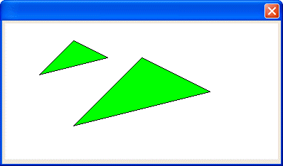

SET_SCALE()
Syntax
SET_SCALE( Metric as N )
Argument | Description |
Metric | The number of inches that the unit 1 represents. The default is 1 inch. |
Description
The SET_SCALE() function redefines the metric used in setting coordinates. The default is 1 = 1 inch.
Limitations
Used only in the Code sections of UI_BITMAP_DRAW(), UI_SCREEN_DRAW(), and UI_PRINTER_DRAW().
Example
The following example draws a triangle at the default metric, then redefines the metric to be .5, and draws another triangle.

ui_bitmap_create("test", 4, 2) ui_bitmap_draw("test",<<%code% inner_Rect(0, 0, 4, 2) set_brush("green") set_pen("black") start_poly(2, .5) lineto(3, 1) lineto(1, 1.5) fill_poly(2, .5) set_scale(.5) start_poly(2, .5) lineto(3, 1) lineto(1, 1.5) fill_poly(2, .5) %code%) ui_dlg_box("","{image=test}") |
See Also